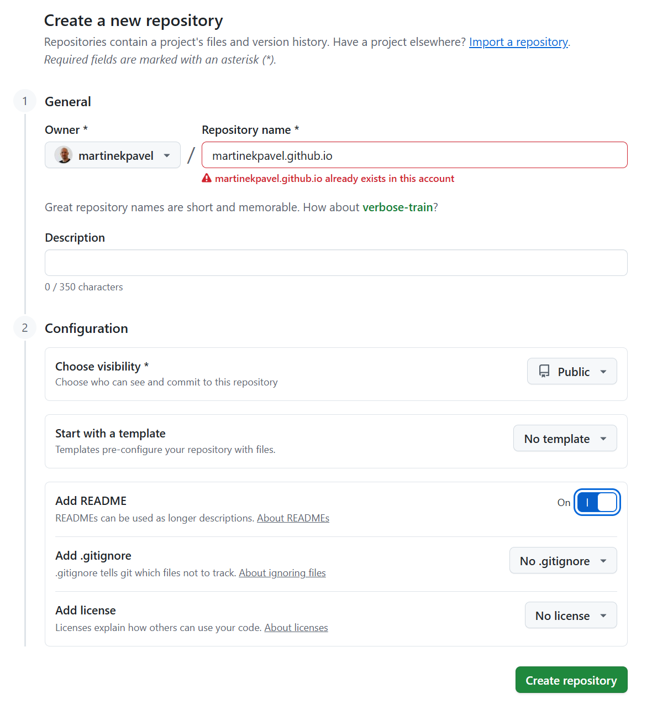
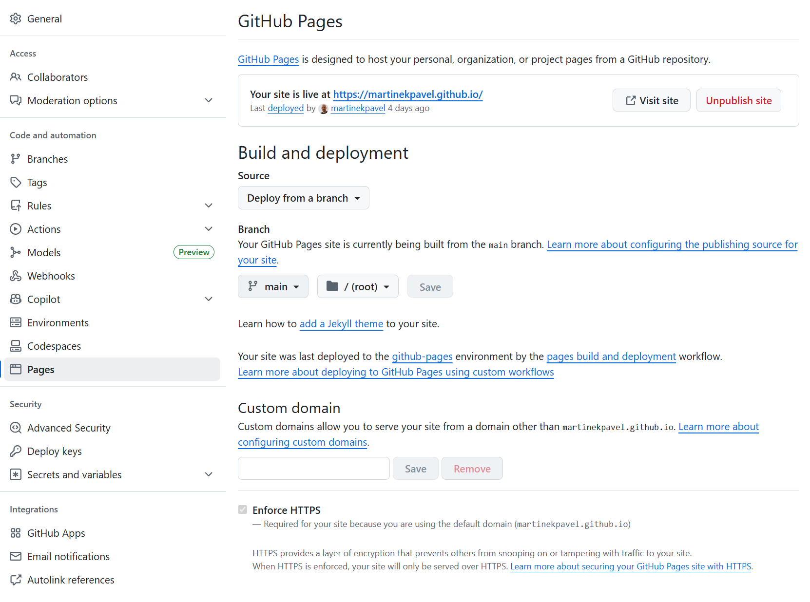
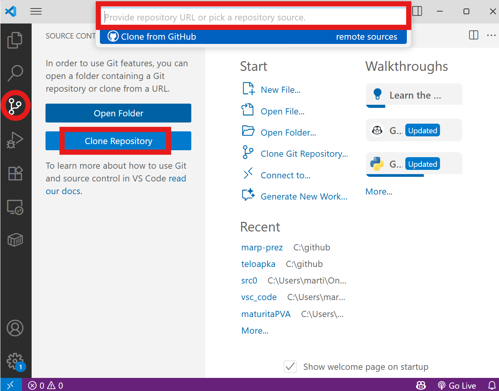
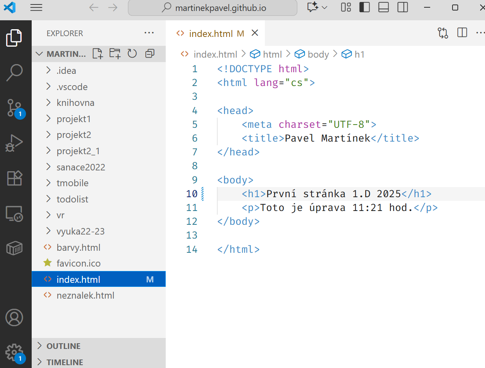
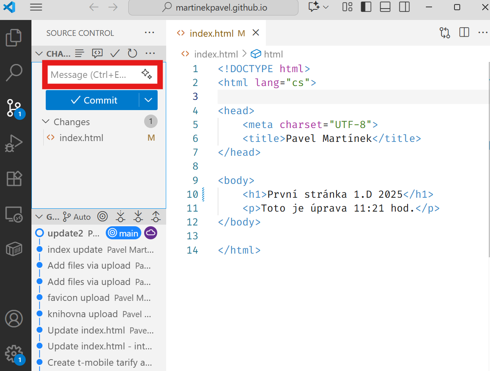
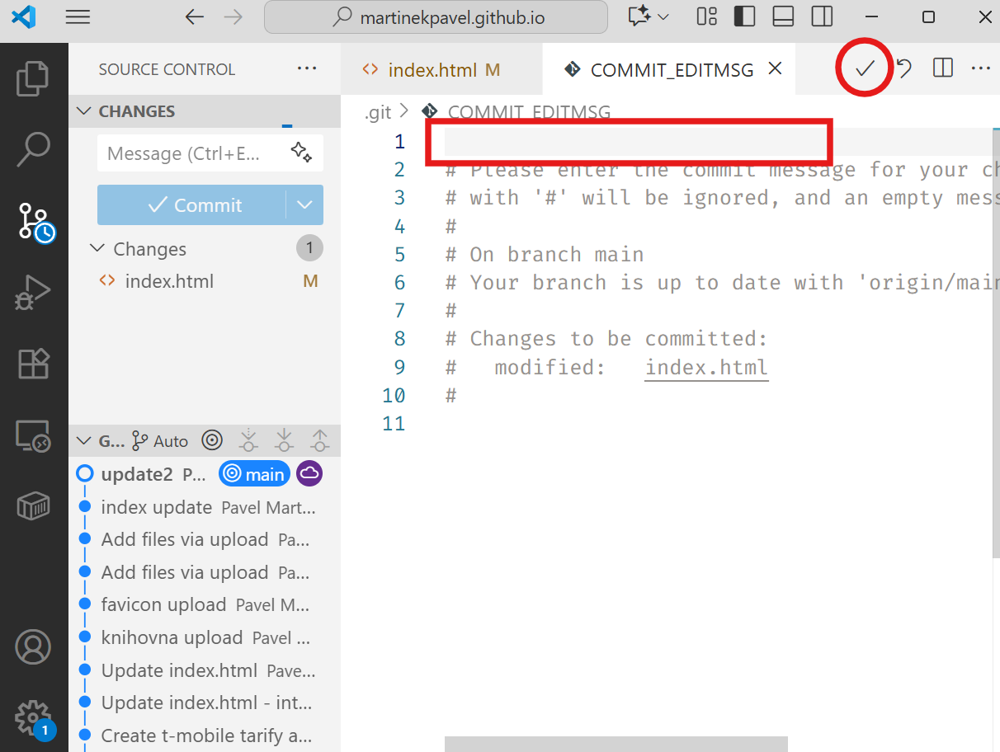
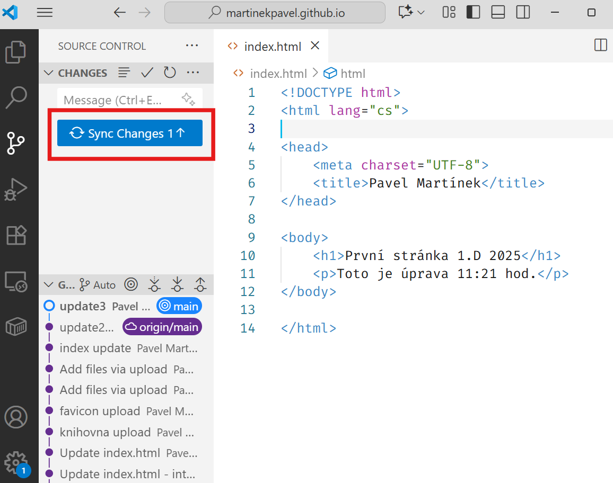
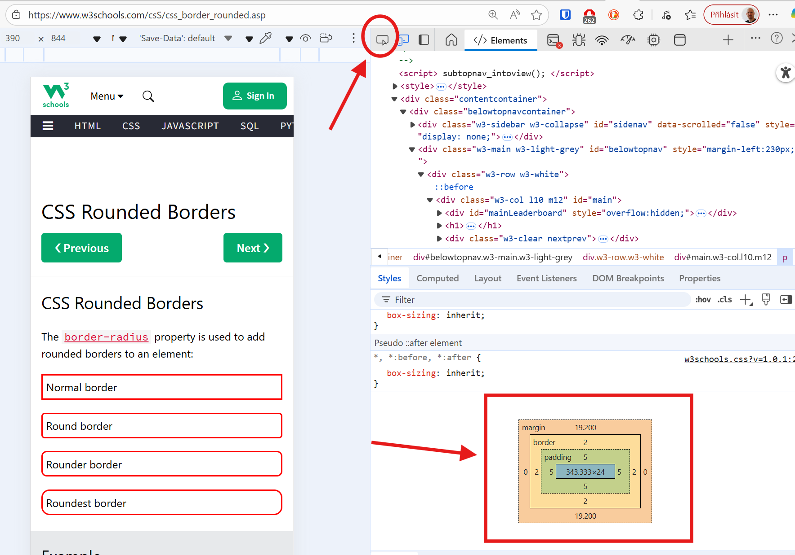

Základy HTML a CSS
Podpora výuky předmětu Programování a vývoj aplikací.
Html šablona
Publikace webu
Následující odstavce popíší publikaci statických stránek (html,css,js) na github pages. Originální návod: https://docs.github.com/en/pages/quickstart
Vytvoříme nový repozitář, který se bude jmenovat “váš účet”.github.io
- repozitář bude public
- zapneme Add README

Pozor “váš účet” musí být opravdu název vašeho účtu, nic víc (děláte tu často chybu).
Přejdeme do Settings a najdeme záložku Pages
Vybereme Branch -> bude tam Main a dáme Save

Minutku počkáme a objeví se naše webová adresa
Pokud se nic nebude dít, přepněte větev, dejte Save a pak znovu na tu správnou.
- [] Přidáme adresu (Propojit) jako řešení zadání do Teams
Naklonujeme repozitář na svůj disk pomocí VSC.
A vybereme umístění našeho projektu (např. C:\github, nebo Stažené\github-repos apod.)

Vložíme soubor s názvem index.html (přejmenujeme svůj soubor)

Uděláme Commit sem

NEBO sem a potvrdíme (toto se objeví, pokud nevyplníme commit viz obrázek výše)

Sync Changes a možná bude třeba řešit autentizaci.

Kaskádové styly
Davidova učebnice: https://docs.google.com/document/d/1J6NPwn97r0TGJra6QRh3oyNromnFBJCfvnddp1hmHuE/ kapitoly 15 – 36
Kam ty naše styly můžeme zapisovat?
inline aplikované přímo na nějaký prvek webu
<h1 style="color: red">Můj web</h1>interně přímo v hlavičce webu
<head><title>Můj web</title><style>h1 { color: green; }</style></head>externě v samostatném souboru
<head><title>Můj web</title><link rel="stylesheet" href="style.css"></head>Jak cílíme na prvky v našem webu?
Pomocí selektorů https://www.w3schools.com/cssref/css_selectors.php
Try selectors https://www.w3schools.com/cssref/trysel.php
CSS Diner (hra) https://flukeout.github.io/
Příklady a syntaxe
| html kód | css kód |
|---|---|
<h1> |
h1 { color: red; } |
<div id="idecko"></div> |
#idecko { color: red; } |
<div class="trida"></div> |
.trida { color: red; } |
Poznámka: id v kódu stránky máme pouze jednou class může být vícekrát
Blokové a inline elementy
Seznam: https://www.w3schools.com/htmL/html_blocks.asp
Anonymní blokový element: <div></div> Anonymní inline element: <span></span>
Většinou k nim přidáváme id nebo class.
Co můžeme nastavovat ?
- barvu písma
color: - barvu pozadí
background-color - ohraničení
border - odsazení z vnějšku
margin - odsazení uvnitř
padding - zaoblení rohů
border-radius - styl písma
font-family - stínování https://getcssscan.com/css-box-shadow-examples
DevTools (F12)

Jak zarovnat web na střed
- vytvořte element, kterým vše obalíte
<div class="containter"> ... </div> - nastavte mu požadovanou šířku (css)
.container {max-width: 1024px;} - nastavte margin vlevo a vpravo na auto
.container {margin: auto;}
Zkuste
html.html
<!DOCTYPE html>
<html lang="en">
<head>
<title>Document</title>
<link rel="stylesheet" href="style.css">
</head>
<body>
<div class="container">
<h1>Nadpis</h1>
<p>Malá ukázka</p>
</div>
</body>
</html>style.css
body {
background-color: lightgray;
}
.container {
background-color: white;
max-width: 600px;
border-radius: 15px;
box-shadow: rgba(0, 0, 0, 0.35)
0px 5px 15px;
margin: 100px auto;
padding: 5px 30px;
}Úkol
Upravte svou webovou stránku ve svém repozitáři a do Teams sdílejte adresu (stejně jako v minulém zadání).
Vyhledejte na internetu informace o kontrastu písma webových stránek. Jak kontrolovat, jak správně nastavit.
Úpravy budou minimálně zahrnovat:
Responzivnost
Upravit menu webu pro rozlišení na mobilních telefonech
Responzivní web
- nastavení
viewporthttps://www.w3schools.com/css/css_rwd_viewport.asp - použití proměnlivých
widthoproti pevným - media queries - různé styly pro různá rozlišení
remmístopx- metoda
mobile first
.big {
font-size: 3rem;
font-weight: bold;
}<div id="widescreen" class="big">widescreen</div>
<div id="normal" class="big">normal</div>
<div id="tablet" class="big">tablet</div>
<div id="smartphone" class="big">smartphone</div>
<div id="landscape" class="big">landscape</div>body {
background-color: grey;
color: white;
text-align: center;
padding-top: 100px;
}
.big { /* doplníme */
display: none;
text-transform: capitalize;
}@media(max-width:500px) {
body {
background-color: red;
}
#smartphone {
display: block;
}
}@media(min-width: 501px) and (max-width:768px) {
body {
background-color: green;
}
#tablet {
display: block;
}
}@media(min-width: 769px) and (max-width:1200px) {
body {
background-color: cyan;
}
#normal {
display: block;
}
}@media(min-width: 1201px) {
body {
background-color: black;
}
#widescreen {
display: block;
}
}@media(max-height: 500px) {
body {
background-color: orange;
}
#landscape {
display: block;
}
}Relativní jednotky em vs rem
Úkol
Upravte svou webovou stránku ve svém repozitáři a do Teams sdílejte adresu (stejně jako v minulém zadání).
Doplňte ikony do svého menu a zajistěte, že v mobilním zobrazní ikony zůstanou a názvy v menu zmizí.
Použijte ve svém projektu sekce <header>, <main> a <footer>.
https://www.w3schools.com/html/html5_semantic_elements.asp
Použijte v zápatí svého webu ikony pro validaci html stránky a css souboru, po kliknutí uvidím výsledky validace.